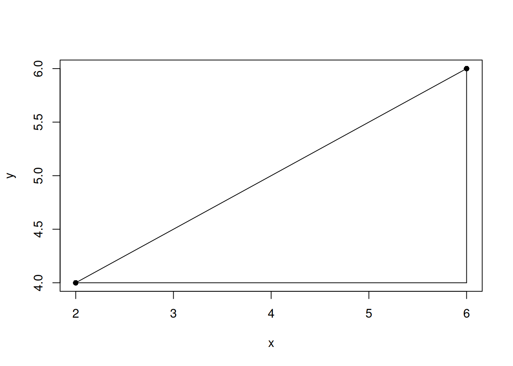
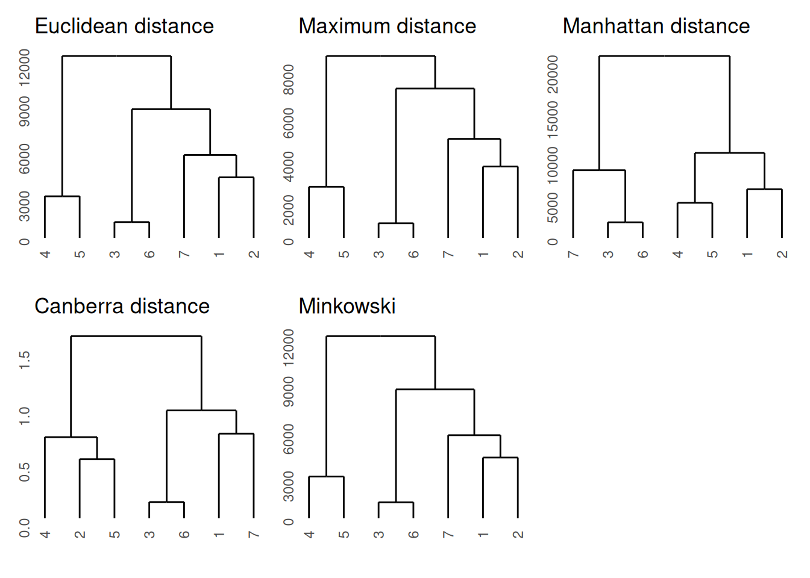

Last updated: 2022-04-14
Checks: 7 0
Knit directory: muse/
This reproducible R Markdown analysis was created with workflowr (version 1.7.0). The Checks tab describes the reproducibility checks that were applied when the results were created. The Past versions tab lists the development history.
Great! Since the R Markdown file has been committed to the Git repository, you know the exact version of the code that produced these results.
Great job! The global environment was empty. Objects defined in the global environment can affect the analysis in your R Markdown file in unknown ways. For reproduciblity it’s best to always run the code in an empty environment.
The command set.seed(20200712) was run prior to running the code in the R Markdown file. Setting a seed ensures that any results that rely on randomness, e.g. subsampling or permutations, are reproducible.
Great job! Recording the operating system, R version, and package versions is critical for reproducibility.
Nice! There were no cached chunks for this analysis, so you can be confident that you successfully produced the results during this run.
Great job! Using relative paths to the files within your workflowr project makes it easier to run your code on other machines.
Great! You are using Git for version control. Tracking code development and connecting the code version to the results is critical for reproducibility.
The results in this page were generated with repository version a9f5e22. See the Past versions tab to see a history of the changes made to the R Markdown and HTML files.
Note that you need to be careful to ensure that all relevant files for the analysis have been committed to Git prior to generating the results (you can use wflow_publish or wflow_git_commit). workflowr only checks the R Markdown file, but you know if there are other scripts or data files that it depends on. Below is the status of the Git repository when the results were generated:
Ignored files:
Ignored: .Rhistory
Ignored: .Rproj.user/
Ignored: r_packages_4.1.2/
Untracked files:
Untracked: analysis/cell_ranger.Rmd
Note that any generated files, e.g. HTML, png, CSS, etc., are not included in this status report because it is ok for generated content to have uncommitted changes.
These are the previous versions of the repository in which changes were made to the R Markdown (analysis/distance.Rmd) and HTML (docs/distance.html) files. If you’ve configured a remote Git repository (see ?wflow_git_remote), click on the hyperlinks in the table below to view the files as they were in that past version.
| File | Version | Author | Date | Message |
|---|---|---|---|---|
| Rmd | a9f5e22 | Dave Tang | 2022-04-14 | Distance metrics |
The dist function in R computes and returns a distance matrix computed between the rows of a data matrix. The available distance measures include: “euclidean”, “maximum”, “manhattan”, “canberra”, “binary” or “minkowski”.
Prepare a small dataset for calculating the distances.
set.seed(123)
eg1 <- data.frame(
x = sample(1:10000, 7),
y = sample(1:10000, 7),
z = sample(1:10000, 7)
)
eg1 x y z
1 2463 4761 2888
2 2511 6746 6170
3 8718 9819 2567
4 2986 2757 9642
5 1842 5107 9982
6 9334 9145 2980
7 3371 9209 1614Plot in 3D and we can see that points 4 and 6 are far away from each other.
plot_ly(
eg1,
x = ~x,
y = ~y,
z = ~z,
color = row.names(eg1),
text = row.names(eg1)
) %>%
add_markers(marker = list(size = 10)) %>%
add_text(showlegend = FALSE)The first distance metric is the Euclidean distance, which is the default of dist. The Euclidean distance is simply the distance one would physically measure, say with a ruler. For \(n\) dimensions the formula for the Euclidean distance between points \(p\) and \(q\) is:
\[ d(p,q) = d(q,p) = \sqrt{\sum^n_{i=1} (p_i - q_i)^2} \]
We create a function that calculates the Euclidean distance.
euclid_dist <- function(p, q){
as.numeric(sqrt(sum((p - q)^2)))
}The Euclidean distances in one dimension between two points.
euclid_dist(1,5)[1] 4euclid_dist(100,5)[1] 95The Euclidean distances in two dimensions between two points.
euclid_dist(p = c(2, 2), q = c(5.535534, 5.535534))[1] 5The Euclidean distances in three dimensions between points 4 and 6.
euclid_dist(eg1[4,], eg1[6,])[1] 11202.05We can calculate all the (row-wise) pairwise distances by providing the entire dataset.
dist(eg1) 1 2 3 4 5 6
2 3835.890
3 8050.555 7807.163
4 7064.422 5309.664 11523.163
5 7129.530 4203.002 11156.368 2635.685
6 8150.985 7904.722 1002.148 11202.049 11021.049
7 4715.108 5250.058 5465.411 10306.566 9443.922 6117.795The documentation for dist describes the maximum distance as:
Maximum distance between two components of x and y (supremum norm)
Let’s create an example to figure out what this means.
eg2 <- data.frame(x = c(2, 6), y = c(4, 6))
plot(eg2, pch = 16)
# lines is in the format (x1, x2) (y1, y2)
lines(c(eg2[1,1], eg2[2,1]), c(eg2[1,2], eg2[2,2]))
lines(c(eg2[1,1], eg2[2,1]), c(eg2[1,2], eg2[1,2]))
lines(c(eg2[2,1], eg2[2,1]), c(eg2[1,2], eg2[2,2]))
The Euclidean distance is the hypotenuse, which you can calculate using the Pythagoras theorem.
dist(eg2) 1
2 4.472136The maximum distance is the longest edge that is not the hypotenuse.
dist(eg2, method = "maximum") 1
2 4The maximum distance is maximum distance of all edge distances. In eg1 we have three edges between two points.
edge_dist <- function(p, q){
as.numeric(sqrt((p-q)^2))
}
edge_dist(eg1[1, ], eg1[2, ])[1] 48 1985 3282The longest edge is between the z coordinates and this is what the maximum distance returns below.
dist(eg1[1:2, ], method = "maximum") 1
2 3282The results using dist and max(edge_dist()) are identical.
identical(
as.vector(dist(eg1[6:7, ], method = "maximum")),
max(edge_dist(eg1[6, ], eg1[7, ]))
)[1] TRUEWe can create another example to confirm our observation.
set.seed(1984)
eg3 <- data.frame(
w = sample(1:10000, 10),
x = sample(1:10000, 10),
y = sample(1:10000, 10),
z = sample(1:10000, 10)
)
identical(
as.vector(dist(eg3[1:2, ], method = "maximum")),
max(edge_dist(eg3[1, ], eg3[2, ]))
)[1] TRUEThe documentation for dist describes the Manhattan distance as:
Absolute distance between the two vectors (1 norm aka L_1).
https://en.wikipedia.org/wiki/Taxicab_geometry
\[ \sum^n_{i=1} |p_i - q_i|, \\ where\ p = (p_1, p_2, \dots, p_n)\ and\ q = (q_1, q_2, \dots, q_n) \]
As an R function.
man_dist <- function(p, q){
as.numeric(sum(abs(p-q)))
}The Manhattan distance is the sum of all edges.
man_dist(eg3[1, ], eg3[2, ])[1] 13540sum(edge_dist(eg3[1, ], eg3[2, ]))[1] 13540We can calculate all Manhattan distances and confirm the distance between points 1 and 2 in eg3.
dist(eg3, method="manhattan") 1 2 3 4 5 6 7 8 9
2 13540
3 15962 7212
4 10870 11072 16032
5 16386 4974 3868 13070
6 17850 14052 11484 18896 12814
7 15207 16665 15215 12911 12397 23153
8 24977 19209 16147 14107 14235 13649 11436
9 17959 5493 12119 12425 9739 18959 16100 19976
10 12946 11900 5406 12464 7068 10652 12501 12031 16807The Canberra distance is formulated as:
\[ d(p, q) = \sum^n_{i = 1}\frac{|p_i-q_i|}{|p_i|+|q_i|}, \\ where\ p = (p_1, p_2, \dots, p_n)\ and\ q = (q_1, q_2, \dots, q_n) \]
I guess the name is a play on Manhattan distance, since at least one of the researchers (William T. Williams) that devised the distance worked in Australia (Canberra is the capital of Australia).
As an R function.
canberra_dist <- function(p,q){
sum( (abs(p-q)) / (abs(p) + abs(q)) )
}The main difference is that the distance is “weighted” by dividing by the sum of two points.
canberra_dist(1, 10)[1] 0.8181818All Canberra distances.
dist(eg1, method="canberra") 1 2 3 4 5 6
2 0.5444855
3 0.9651899 1.1506609
4 0.9015675 0.7257530 1.6307834
5 0.7305181 0.5279723 1.5577108 0.5531070
6 0.9133741 1.0756235 0.1441193 1.5797848 1.4938881
7 0.7570213 0.8858836 0.7022968 1.3129772 1.3014659 0.7701741The Minkowski distance of order \(p\) (where \(p\) is an integer) is formulated as:
\[ D(X, Y) = \left( \sum^n_{i=1} |x_i - y_i|^p\right)^{\frac{1}{p}}, \\ where\ X = (x_1, x_2, \dots, x_n)\ and\ Y = (y_1, y_2, \dots, y_n) \in \mathbb{R}^n \]
The Minkowski distance is a metric that can be considered as a generalisation of both the Euclidean distance and the Manhattan distance and is named after Hermann Minkowski.
As an R function and check result with dist.
minkowski_dist <- function(x, y, p){
(sum(abs(x -y)^p))^(1/p)
}
identical(
minkowski_dist(eg1[1, ], eg1[2, ], 1),
as.vector(dist(eg1[1:2, ], method = "minkowski", p = 1))
)[1] TRUEIf p is 1, then the distance is the same as the Manhattan distance.
identical(
minkowski_dist(eg3[1, ], eg3[2, ], 1),
man_dist(eg3[1, ], eg3[2, ])
)[1] TRUEIf p is 2, then the distance is the same as the Euclidean distance.
identical(
minkowski_dist(eg3[1, ], eg3[2, ], 2),
euclid_dist(eg3[1, ], eg3[2, ])
)[1] TRUEAs we increase p, the Minkowski approaches a limit (and we obtain the Chebyshev distance).
sapply(1:20, function(x) minkowski_dist(eg3[1, ], eg3[2, ], p = x)) [1] 13540.000 8318.523 7522.088 7315.580 7253.782 7234.047 7227.482
[8] 7225.232 7224.443 7224.162 7224.060 7224.022 7224.008 7224.003
[15] 7224.001 7224.000 7224.000 7224.000 7224.000 7224.000I learned of negative distances from the paper Clustering by Passing Messages Between Data Points, which are specifically called the negative squared Euclidean distance. The R package apcluster contains the function negDistMat, which can be used to calculate the negative squared Euclidean distance (among others). The paper is shared here for your reading pleasure.
As stated in the paper, the negative distance between points \(x_i\) and \(x_k\) is:
\[ s(i, k) = -||x_i - x_k||^2 \]
Example data.
eg4 <- matrix(
data = c(0, 0.5, 0.8, 1, 0, 0.2, 0.5, 0.7, 0.1, 0, 1, 0.3, 1, 0.8, 0.2),
nrow = 5,
ncol = 3,
byrow = TRUE
)
eg4 [,1] [,2] [,3]
[1,] 0.0 0.5 0.8
[2,] 1.0 0.0 0.2
[3,] 0.5 0.7 0.1
[4,] 0.0 1.0 0.3
[5,] 1.0 0.8 0.2Use negDistMat to calculate the negative distances or just calculate the Euclidean distance and turn it negative.
library(apcluster)
Attaching package: 'apcluster'The following object is masked from 'package:stats':
heatmapidentical(
negDistMat(eg4),
as.matrix(-dist(eg4, diag = TRUE, upper = TRUE))
)[1] TRUEWe will perform hierarchical clustering using different distances to compare the results. For plotting the dendrograms, we will use the ggdendro package and use the patchwork package for adding plots together.
library(ggdendro)
library(patchwork)
euc_d <- dist(eg1)
max_d <- dist(eg1, method = "maximum")
man_d <- dist(eg1, method = "manhattan")
can_d <- dist(eg1, method = "canberra")
min_d <- dist(eg1, method = "minkowski")
ggdendrogram(hclust(euc_d)) + ggtitle("Euclidean distance") +
ggdendrogram(hclust(max_d)) + ggtitle("Maximum distance") +
ggdendrogram(hclust(man_d)) + ggtitle("Manhattan distance") +
ggdendrogram(hclust(can_d)) + ggtitle("Canberra distance") +
ggdendrogram(hclust(min_d)) + ggtitle("Minkowski")
The Mantel test performs a correlation between two distance matrices and this is available in the ade4 package.
Let’s compare identical distance matrices and see what results we get.
library(ade4)
mantel.randtest(euc_d, euc_d, nrepet = 10000)Monte-Carlo test
Call: mantel.randtest(m1 = euc_d, m2 = euc_d, nrepet = 10000)
Observation: 1
Based on 10000 replicates
Simulated p-value: 0.00029997
Alternative hypothesis: greater
Std.Obs Expectation Variance
4.2633060551 -0.0007816083 0.0551043151 The correlation is reported as the observation and the null hypothesis is that there is no relation between the two matrices, which is rejected. The idea of the test is to permute the rows and columns and observe whether the correlation coefficient is affected. From Wikipedia:
The reasoning is that if the null hypothesis of there being no relation between the two matrices is true, then permuting the rows and columns of the matrix should be equally likely to produce a larger or a smaller coefficient.
We can calculate all correlations on the mtcars dataset and see how similar different distances are to each other.
my_dist <- c(
"euclidean",
"maximum",
"manhattan",
"canberra",
"minkowski"
)
my_comp <- as.list(as.data.frame(combn(x = my_dist, 2)))
my_mantel <- lapply(my_comp, function(x){
mantel.randtest(dist(mtcars, method = x[1]), dist(mtcars, method = x[2]), nrepet = 10000)
})
my_cors <- sapply(my_mantel, function(x) x$obs)
names(my_cors) <- sapply(my_comp, function(x) paste0(tools::toTitleCase(x[1]), " vs ", tools::toTitleCase(x[2])))
my_cors Euclidean vs Maximum Euclidean vs Manhattan Euclidean vs Canberra
0.9901299 0.9918907 0.7705224
Euclidean vs Minkowski Maximum vs Manhattan Maximum vs Canberra
1.0000000 0.9667454 0.7560396
Maximum vs Minkowski Manhattan vs Canberra Manhattan vs Minkowski
0.9901299 0.7915281 0.9918907
Canberra vs Minkowski
0.7705224 Most distances are similar to each other except the Canberra distance. Since mantel.rtest uses the Pearson correlation, the weighted Canberra distances are less similar to the other unweighted distances.
sessionInfo()R version 4.1.2 (2021-11-01)
Platform: x86_64-pc-linux-gnu (64-bit)
Running under: Ubuntu 20.04.3 LTS
Matrix products: default
BLAS/LAPACK: /usr/lib/x86_64-linux-gnu/openblas-pthread/libopenblasp-r0.3.8.so
locale:
[1] LC_CTYPE=en_US.UTF-8 LC_NUMERIC=C
[3] LC_TIME=en_US.UTF-8 LC_COLLATE=en_US.UTF-8
[5] LC_MONETARY=en_US.UTF-8 LC_MESSAGES=en_US.UTF-8
[7] LC_PAPER=en_US.UTF-8 LC_NAME=C
[9] LC_ADDRESS=C LC_TELEPHONE=C
[11] LC_MEASUREMENT=en_US.UTF-8 LC_IDENTIFICATION=C
attached base packages:
[1] stats graphics grDevices utils datasets methods base
other attached packages:
[1] ade4_1.7-18 patchwork_1.1.1 ggdendro_0.1.23 apcluster_1.4.9
[5] plotly_4.10.0 forcats_0.5.1 stringr_1.4.0 dplyr_1.0.7
[9] purrr_0.3.4 readr_2.1.1 tidyr_1.1.4 tibble_3.1.6
[13] ggplot2_3.3.5 tidyverse_1.3.1 workflowr_1.7.0
loaded via a namespace (and not attached):
[1] httr_1.4.2 jsonlite_1.7.3 viridisLite_0.4.0 modelr_0.1.8
[5] assertthat_0.2.1 getPass_0.2-2 highr_0.9 cellranger_1.1.0
[9] yaml_2.2.2 pillar_1.6.5 backports_1.4.1 lattice_0.20-45
[13] glue_1.6.1 digest_0.6.29 RColorBrewer_1.1-2 promises_1.2.0.1
[17] rvest_1.0.2 colorspace_2.0-2 htmltools_0.5.2 httpuv_1.6.5
[21] Matrix_1.3-4 pkgconfig_2.0.3 broom_0.7.11 haven_2.4.3
[25] scales_1.1.1 processx_3.5.2 whisker_0.4 later_1.3.0
[29] tzdb_0.2.0 git2r_0.29.0 generics_0.1.1 farver_2.1.0
[33] ellipsis_0.3.2 withr_2.4.3 lazyeval_0.2.2 cli_3.1.1
[37] magrittr_2.0.2 crayon_1.4.2 readxl_1.3.1 evaluate_0.14
[41] ps_1.6.0 fs_1.5.2 fansi_1.0.2 MASS_7.3-54
[45] xml2_1.3.3 tools_4.1.2 data.table_1.14.2 hms_1.1.1
[49] lifecycle_1.0.1 munsell_0.5.0 reprex_2.0.1 callr_3.7.0
[53] compiler_4.1.2 jquerylib_0.1.4 rlang_1.0.0 grid_4.1.2
[57] rstudioapi_0.13 htmlwidgets_1.5.4 crosstalk_1.2.0 labeling_0.4.2
[61] rmarkdown_2.11 gtable_0.3.0 DBI_1.1.2 R6_2.5.1
[65] lubridate_1.8.0 knitr_1.37 fastmap_1.1.0 utf8_1.2.2
[69] rprojroot_2.0.2 stringi_1.7.6 Rcpp_1.0.8 vctrs_0.3.8
[73] dbplyr_2.1.1 tidyselect_1.1.1 xfun_0.29